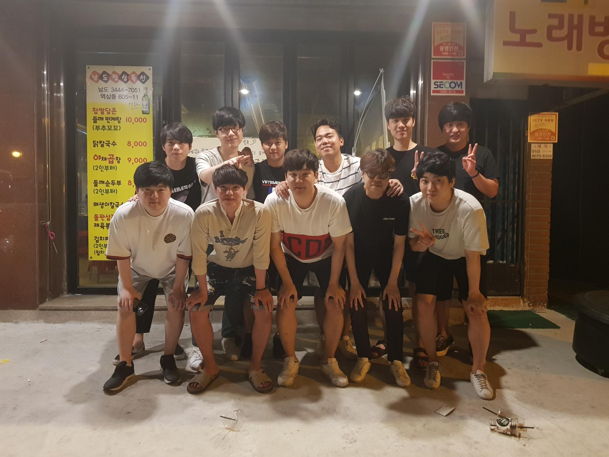

Starcraft
- Zerg
- Terran
- Protoss
Terran
Endianness
refers to the sequential order in which bytes are arranged
into larger numerical values when stored in memory or when transmitted
over digital links. Endianness is of interest in computer science because
two conflicting and incompatible formats are in common use: words may be
represented in big-endian or little-endian format, depending on whether bits
or bytes or other components are ordered from the big end (most significant bit)
or the little end (least significant bit).
ROUND ROBIN
A round-robin tournament (or all-play-all tournament) is a
competition in which each contestant meets all other contestants in turn.
It contrasts with an elimination tournament.
